Din inimasatului,
direct la ușa ta.
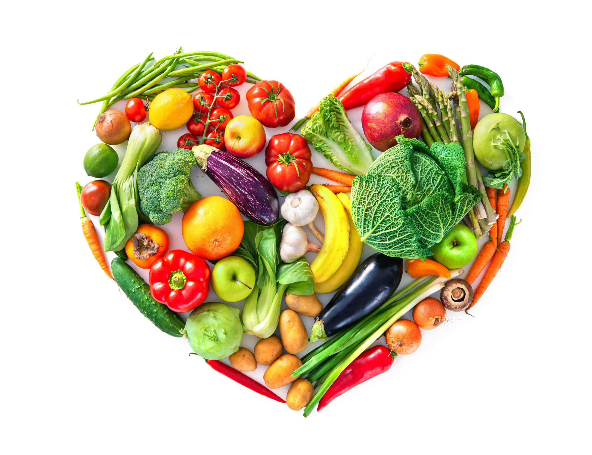

Platforma noastră este un spațiu digital dedicat micilor producători locali din mediul rural, care doresc să-și comercializeze produsele direct către consumatori, fără intermediari. Este un loc în care tradiția întâlnește tehnologia - o piață virtuală unde legumele, fructele, lactatele, produsele apicole, conservele de casă își găsesc drumul din mâinile țăranilor moldoveni direct în casele celor care apreciază calitatea, autenticitatea și sustenabilitatea.
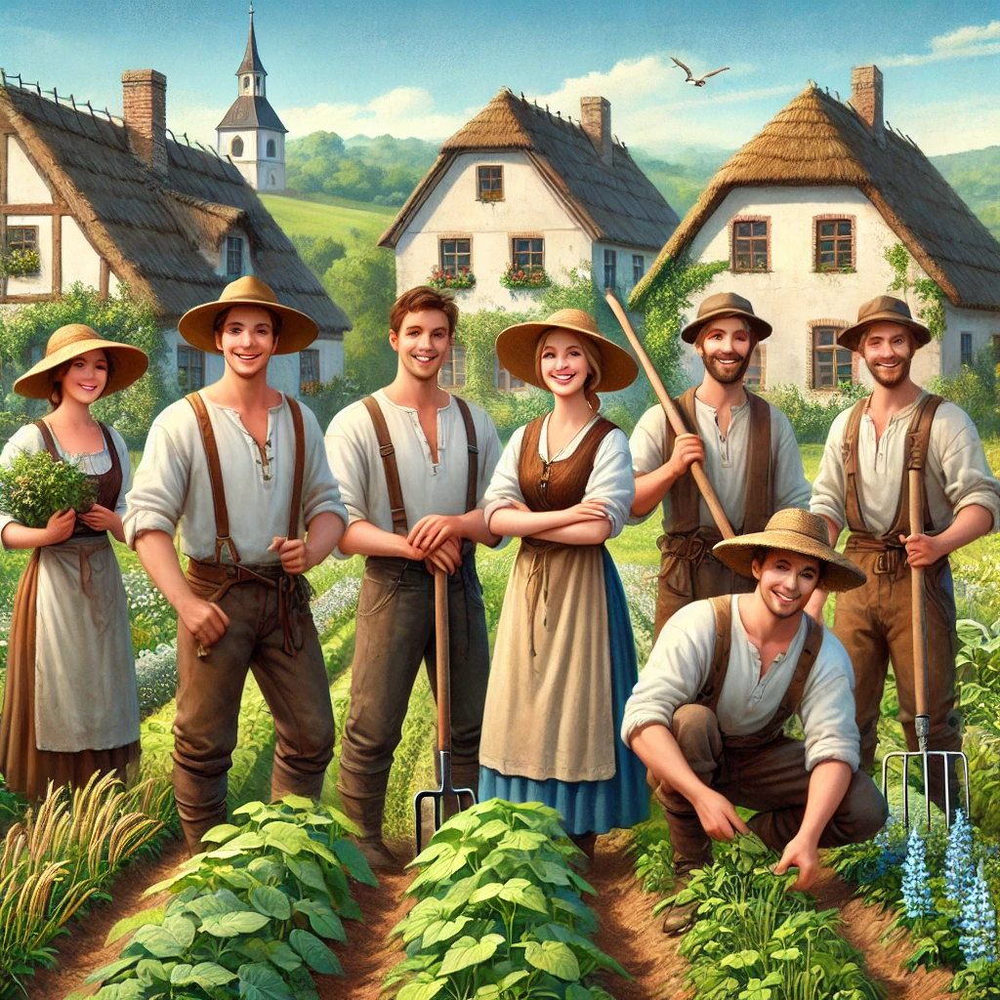
Consumatorii ne aleg pentru că oferim mai mult decât produse – oferim încredere, transparență și apropiere față de cei care le produc. Fiecare aliment are o poveste, fiecare producător are un chip și o voce. Nu cumpără doar un borcan cu miere, ci și o parte din munca și sufletul unei familii de la țară. În plus, produsele sunt mereu proaspete și curate. În felul acesta, clientul primește tot ce e mai bun, iar producătorul este răsplătit pe măsură.Este o alegere simplă, comodă și corectă. Comenzile se fac online, rapid, iar livrarea este eficientă. În același timp, fiecare achiziție ajută la susținerea economiei locale și la păstrarea tradițiilor din satele românești. Prin această platformă, contribuim împreună la un stil de viață mai sănătos, mai echilibrat și mai aproape de natură.

Brânză fragedă, făcută în casă din lapte curat, fără aditivi. Producător - Snegur Natalia, s.Băiuș
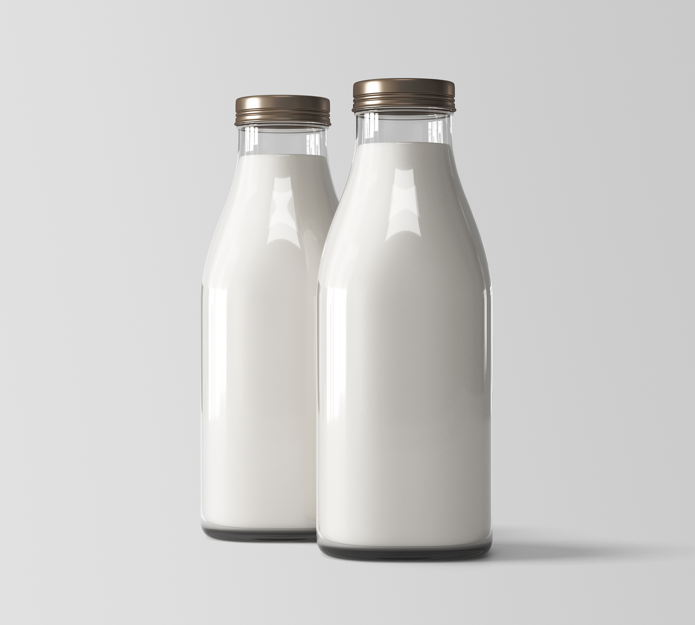
Lapte proaspăt, gustos și hrănitor, direct de la vaci. Producător - Snegur Natalia, s. Băiuș

Ceapă albă, ideală pentru salate, mâncăruri gătite. Producător - Boghean Grigore, Băiuș
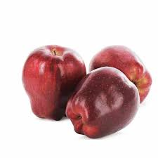
Mere aromate, zemoase, soi - bot de iepure, fără stropiri. Producător - Boghean Grigore, Băiuș
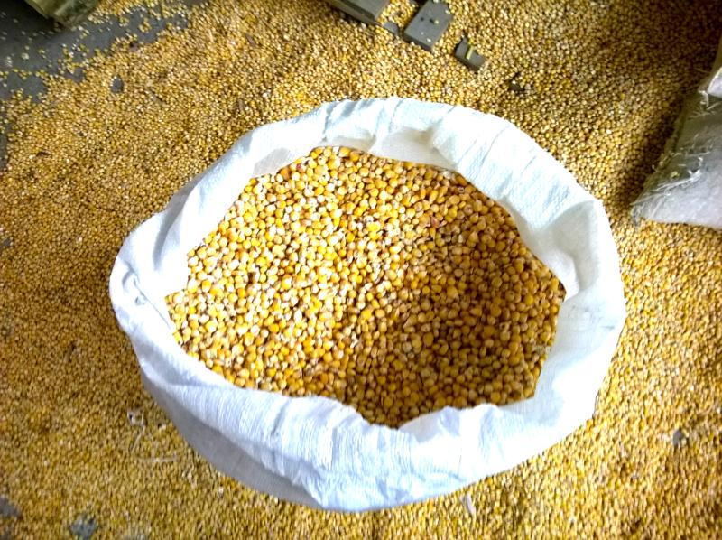
Porumb uscat, curat, bun pentru măcinat, hrănit animalele. Producător - Cajug Nicolae, s. Cazangic
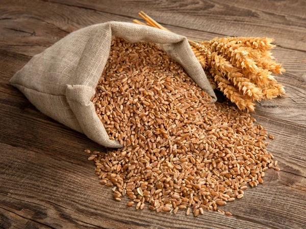
Grâu curat, uscat, crescut în ogor, perfect pentru făină. Producător - Cajug Nicolae, s. Cazangic
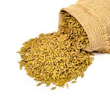
Orz sănătos, de sat, ideal pentru nutreț, preparate tradiționale. Producător - Cajug Nicolae, s. Cazangic
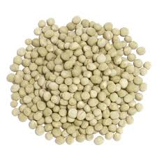
Mazăre uscată, păstrată natural, numai bună pentru supe, tocănițe. Producător - Cajug Nicolae, s. Cazangic
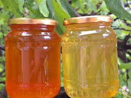
Miere naturală de albine, fără zahăr adăugat. Producător - Cernenchi Victor, Băiuș
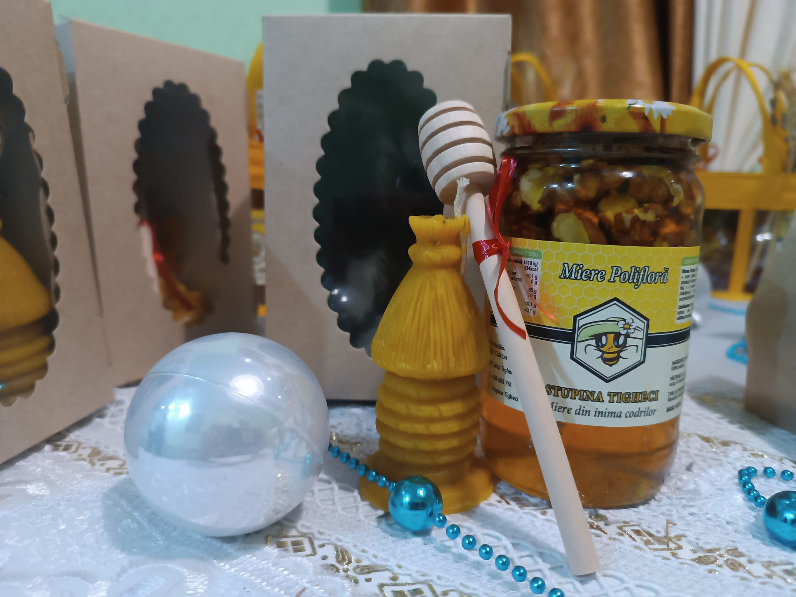
Sănătate și rafinament într-un singur borcan. Producător - Stupina Tigheci, s. Tigheci

Carne fragedă și curată de miel hrănit cu iarbă și fân. Producător - Rotaru Grigore, s. Băiuș
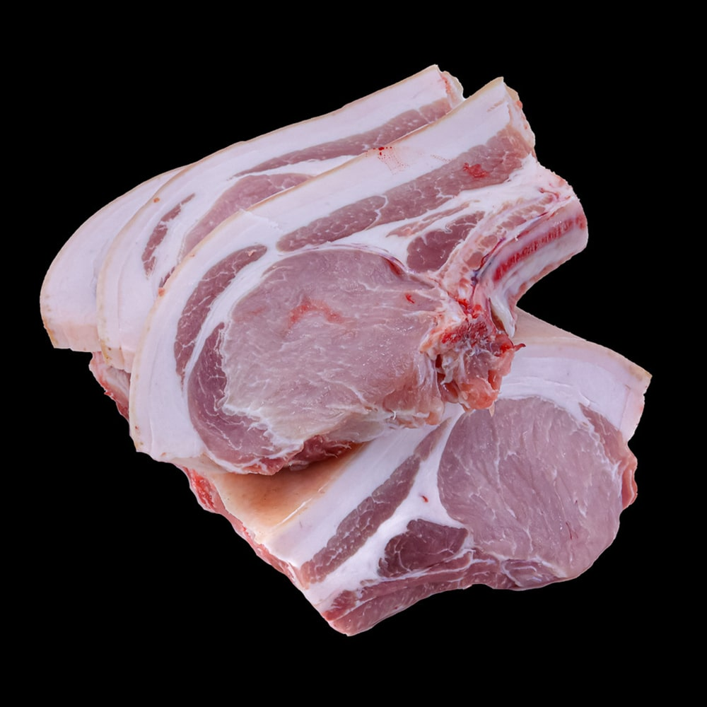
Carne gustoasă de porc hrănit în gospodărie, fără concentrate. Producător - Rotaru Grigore, s. Băiuș
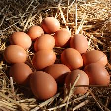
Ouă de găini crescute liber, cu gălbenuș galben intens și gust bogat. Producător - Stoica Ecaterina, s. Băiuș
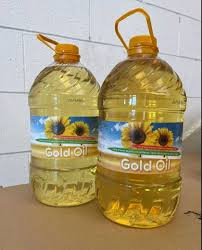
Ulei presat la rece, din semințe de floarea-soarelui autohtone. Producător - Balan Romica, s. Băiuș
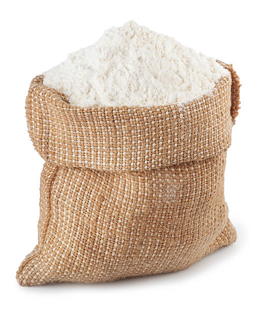
Făină albă din grâu românesc, ideală pentru pâine de casă. Producător - Balan Romica, s. Băiuș

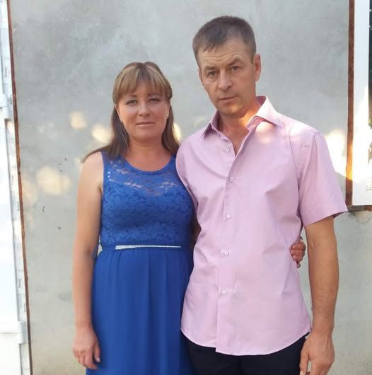
O femeie puternică, cu privirea hotărâtă și mâinile pline de curaj
Un om blând, cu răbdare de fier, care știe limba albinelor.
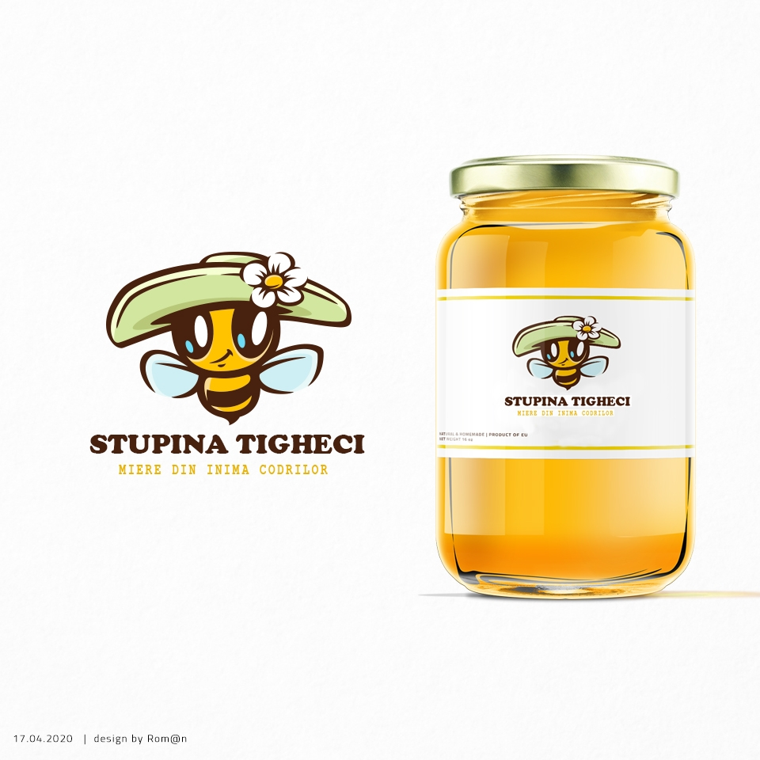
Miere din inima codrilor. Fondată de Crăciun Marina.
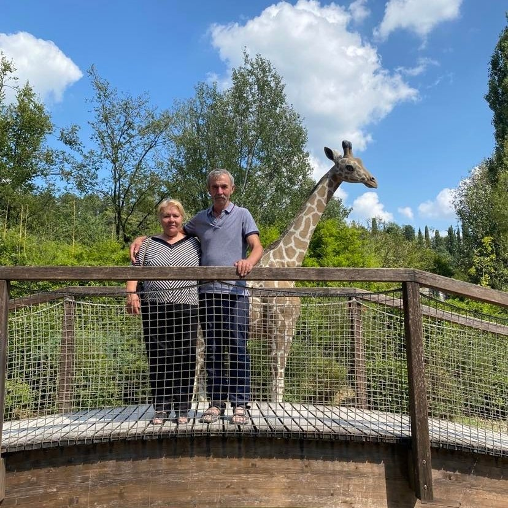
Lucrează din zori până-n seară, fără să-și piardă zâmbetul.

Mâinile ei trudite miros a ulei presat, a grâu, a curat.